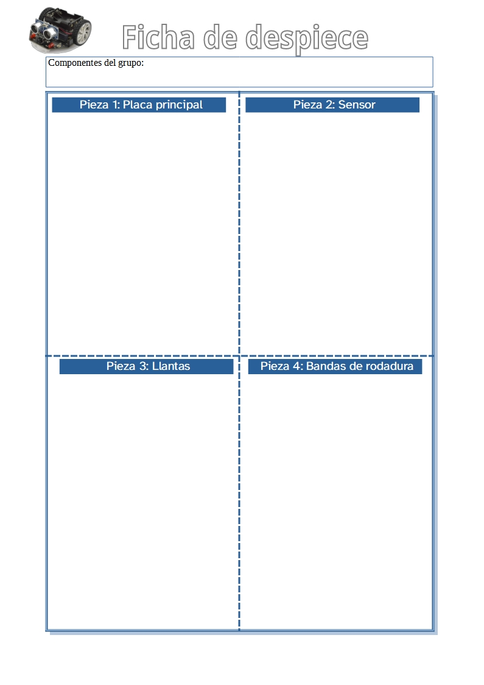
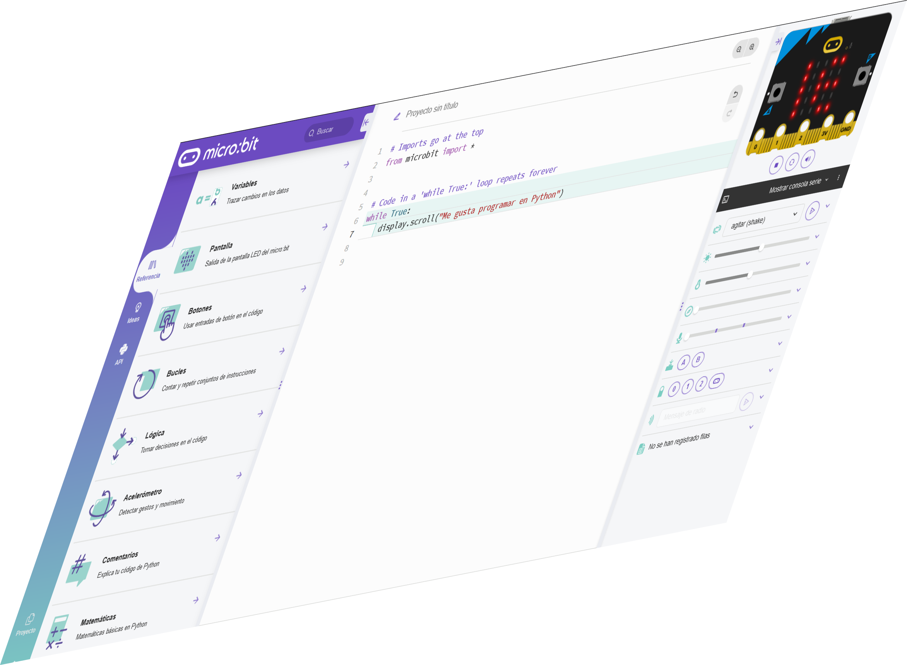
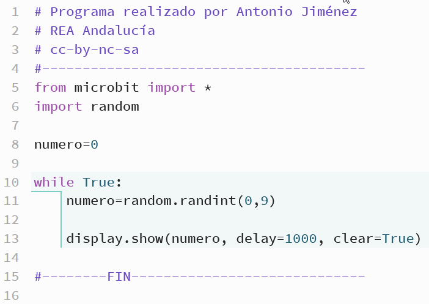
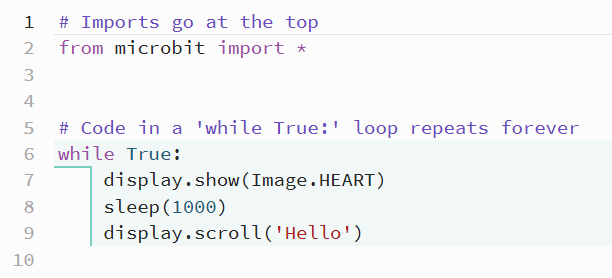

Os presento un elemento fundamental en nuestro proyecto, gracias a él nuestro vehículo podrá detectar un obstáculo.
Os presento un elemento fundamental en nuestro proyecto, gracias a él nuestro vehículo podrá detectar un obstáculo.
Se trata del robot Maqueen.
Os propongo una serie de actividades que os permitirán descubrir más detalles sobre él.
Os presento un elemento fundamental en nuestro proyecto, gracias a él nuestro vehículo podrá detectar un obstáculo.
Se trata del robot Maqueen.
Os propongo una serie de actividades que os permitirán descubrir más detalles sobre él.
Seguro que ya os estáis frotando las manos, a todos nos gusta desmontar cualquier cosa.
Pero antes de empezar, debemos saber qué vamos a necesitar:
La actividad consisten en:
A veces nos quedamos bloqueados y no sabemos seguir.
Mirad la siguente imagen. Es un ejemplo de tabla para recoger la información del despiece de nuestro robot.
Seguro que ahora ya se os ha ocurrido alguna idea.

También, dispones del siguiente enlace que te permite descargar el archivo TablaDespiece.odt para hacer tu trabajo.
Conoce nuestra guía para la competencia digital y encontrarás una ayuda para aprender a utilizar un procesador de textos. Es una herramienta que te ayudará a poder realizar tu informe.
Todos conocemos a los murciélagos y sabemos que, aunque estos animales pueden ver, utilizan los ultrasonidos para localizar objetos o insectos en la oscuridad.
Te presento un sencillo programa para ayudaros a recordar cómo lo hacen:
Seguro que os ha gustado.
Ahora vuestro grupo debe reflexionar sobre las siguientes cuestiones. Recordad que debéis trabajar en grupo:
Nos es necesario que sepáis todas las respuestas. Al final en clase, entre todos y todas, responderemos a ellas.
¿Crees que tus compañeros y compañeras están emocionados con esta actividad?
Cuando estabais haciendo esta actividad grupal, ¿cómo se estaban sintiendo?
Puede que algunos compañeros o compañeras se hayan sentido inseguros o tensas para hacer la actividad. Seguro que alguien ha tranquilizado al equipo y ha ayudado a hacerla.
Es posible que alguien estuviese enfadado o enfadada, quizás porque no sabía cómo hacerla.
Cuando trabajamos en equipo podemos tener diferentes sensaciones al hacer una actividad. Conocerlas y comprenderlas nos ayudará a hacer la tarea con éxito. Para ello sigue estos consejos en las próximas actividades en equipo:
Seguro que ya habéis conocido el sensor que viene en el robot Maqueen.
En la imagen inferior podéis verlo. Además, si hacéis clic sobre la imagen podéis verla mas grande.:
Ahora, vuestro grupo debe contestad a las siguientes preguntas:
Podéis responder a estas cuestiones en vuestro cuaderno o utilizando el ordenador.

Después de conocer cuál será el robot que vamos a utilizar para programar nuestro vehículo inteligente, es el momento de conocer a nuestro segundo protagonista: el editor de código para Python.Estoy seguro de que os van a gustar las siguientes actividades.
¡Empezamos!
Nosotros vamos a necesitar una herramienta que nos permita escribir nuestros programas. Esta herramienta es el editor de código Python.
En la siguiente imagen podéis verlo. No olvides hacer clic para agrandarla.
Ahora que ya conocéis el aspecto de la pantalla principal de nuestro editor. Os propongo, a vuestro grupo, que contestéis a las siguientes cuestiones:
Se me olvidaba algo importante, no os he dicho cómo entrar en el editor. Aquí tenéis el enlace para entrar.
Abrid el editor de código Python e intentad cambiar el idioma que aparece en la pantalla.
En esta actividad vas a trabajar de forma individual.
En la imagen aparecen varios textos en rojo que deberás arrastrar a las zonas indicadas con líneas discontinuas. Si te equivocas puedes volver a intentarlo.
Cuando termines:
No, no eres rara ni raro. Es muy frecuente que cuando estamos trabajando hablemos en silencio con nosotros mismos. Es una forma de comprender mejor lo que hacemos y de buscar soluciones a las tareas o actividades.
De hecho, te aconsejo que lo hagas con mucha frecuencia porque te ayudará a:
¡Habla contigo mismo y aprenderás mejor!

Ya sólo nos falta conocer a nuestro último protagonista, el código Python.Te he preparado unas actividades muy sencillas relacionadas con el código Python.
Presta atención, empezamos YA.
En esta actividad os propongo que trabajéis en grupo.
Debéis hacer lo siguiente:
Ahora estáis preparados para la siguente actividad.
Esta es una actividad individual.
Observa el siguiente programa de Python:

Copia en tu cuaderno el programa anterior. Fíjate en todos los detalles.
Recuerda:
¡Ya puede comenzar a jugar!
Obra publicada con Licencia Creative Commons Reconocimiento Compartir igual 4.0